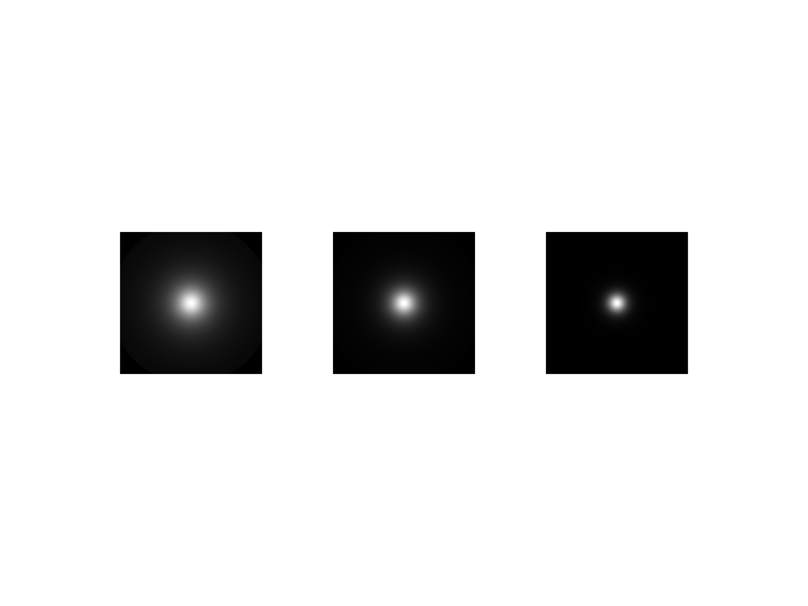

exponent¶
- property Light.exponent¶
スポットライトに使用されるコサインの指数を取得します．
スポットライト(円錐角度が90度未満の位置光源)では，ライトコーン内のライトビームのシェイプはライトの軸からの角度に応じて変化します．輝度の変化は，この角度の余弦を指数で累乗した値に応じて変化します．デフォルトは1です．指数を大きくするとビームがシャープになり(軸の周りにより集中する)，小さくするとビームが広がります．
この特性によって定義される角度依存性と
cone_angleによって実行される打ち切りは独立しているので，(小さいcone_angleの)狭いビームをもつスポットライトについては，強度の角度変化を見ることはより困難であり，ビームの角度分布に目に見えるように影響を与えるためにはより高い指数が必要であるかもしれないことに注意してください．例
指数が1，2，5の3つのスポットライトで照らされた3つの平面をプロットします．指数が最も低いものが最も広いビームになります．
>>> import pyvista as pv >>> plotter = pv.Plotter(lighting='none') >>> for offset, exponent in zip([0, 1.5, 3], [1, 2, 5]): ... _ = plotter.add_mesh(pv.Plane((offset, 0, 0)), color='white') ... light = pv.Light(position=(offset, 0, 0.1), focal_point=(offset, 0, 0)) ... light.exponent = exponent ... light.positional = True ... light.cone_angle = 80 ... plotter.add_light(light) ... >>> plotter.view_xy() >>> plotter.show()
